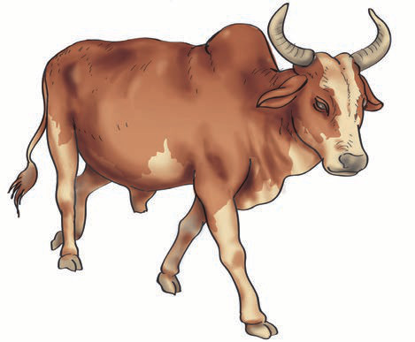
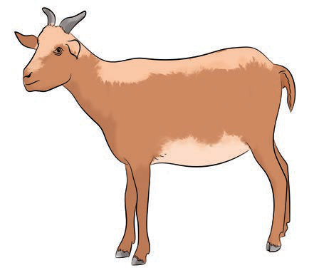

Imitating various sounds of living things
Living things use sound to communicate with each other and with their environment. Observe the picture of animals and birds in figure 2. Then, imitate their sounds.

Cow

Goat